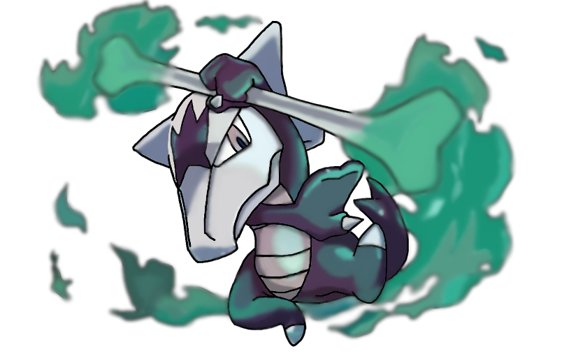
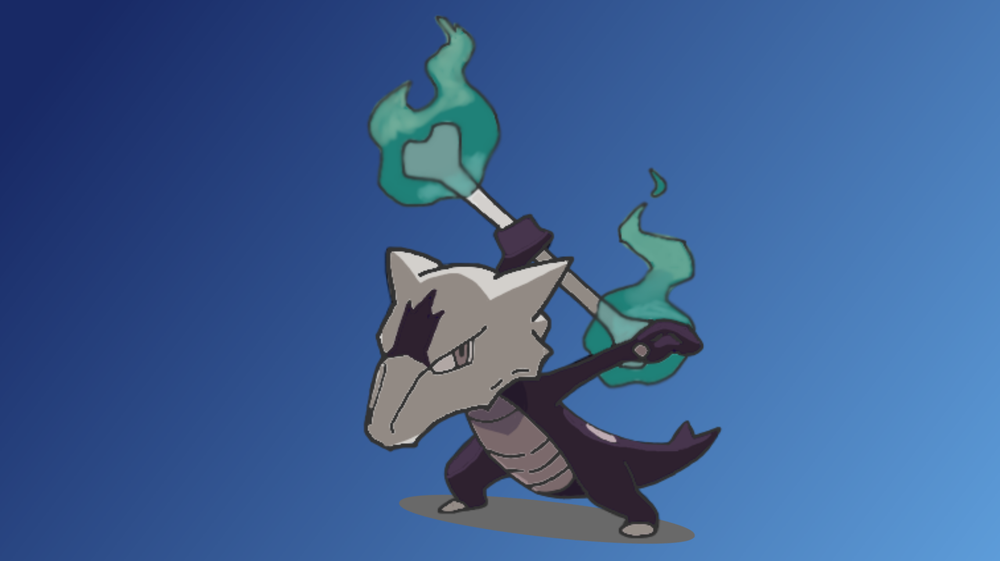
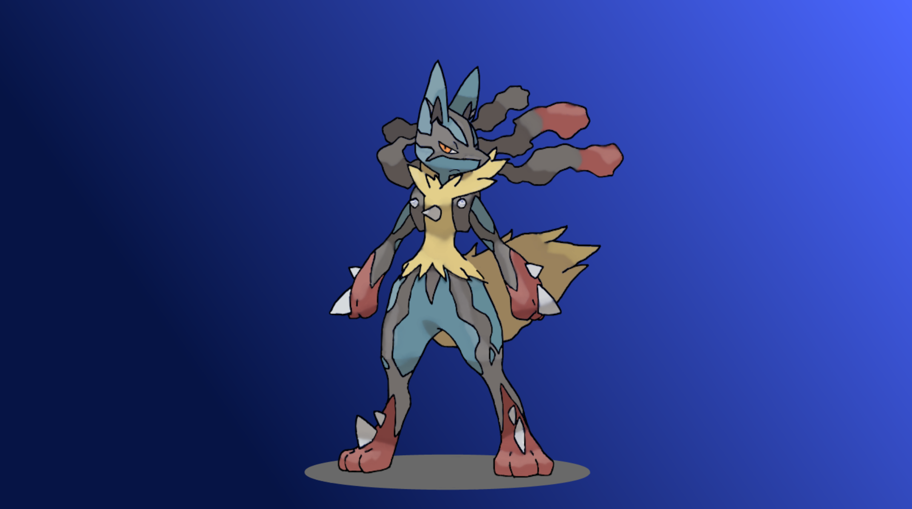
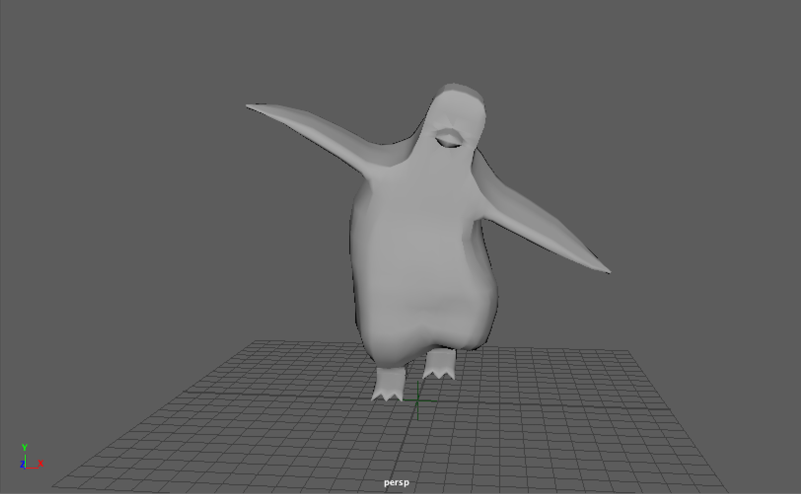
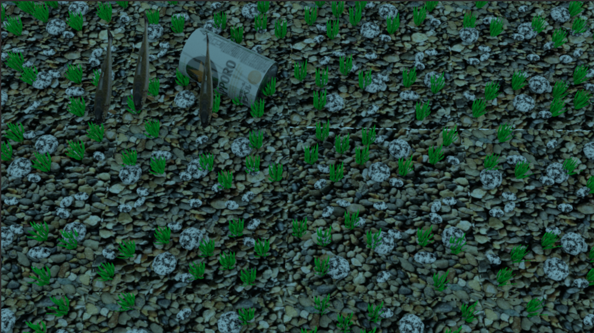

アローラガラガラ1
アローラガラガラ2
メガルカリオ

リニアモーターカー
はじめまして、某大学所属2年の酒井です。
今回はその学校の課題としてこのポートフォリオ(仮)のサイトを作成しました。
大した作品たちではありませんが自分なりに愛情を注いだのでぜひ全てみていってくださると幸いです。
|  |  |
| ポケットモンスター アローラガラガラ1 |
ポケットモンスター アローラガラガラ2 |
|  |  |
| ポケットモンスター メガルカリオ |
MAYA ペンギン |
|
 |
| オリジナルキャラクター リニアモーターカー |
MAYA 川 |